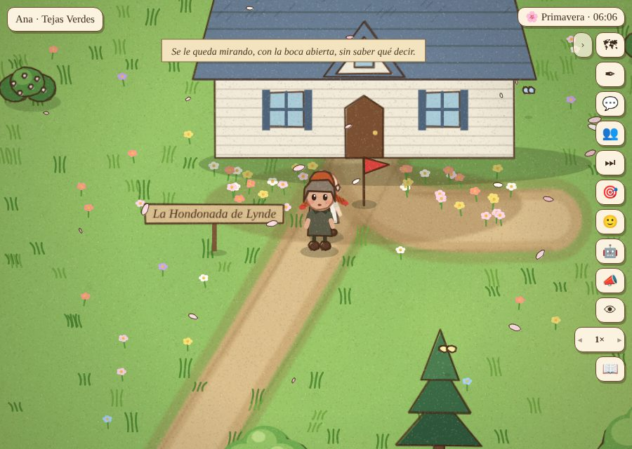
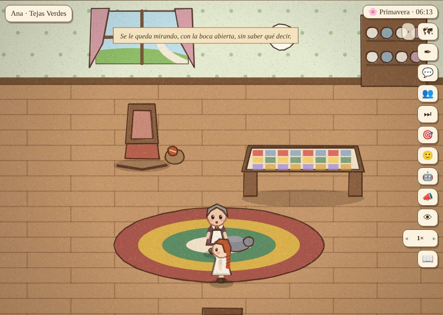
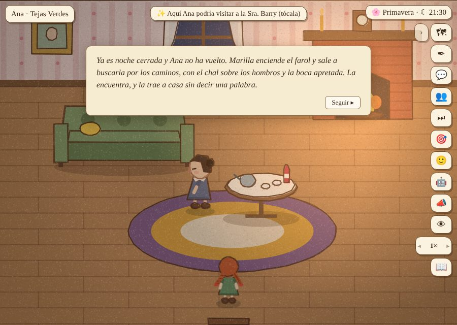
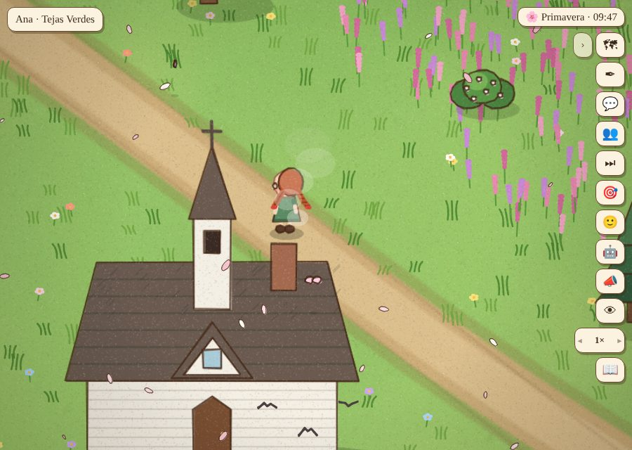
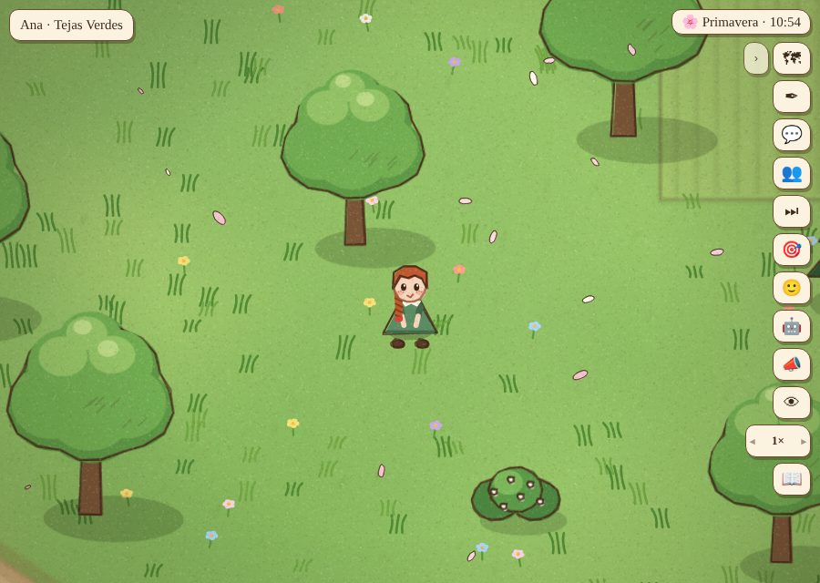
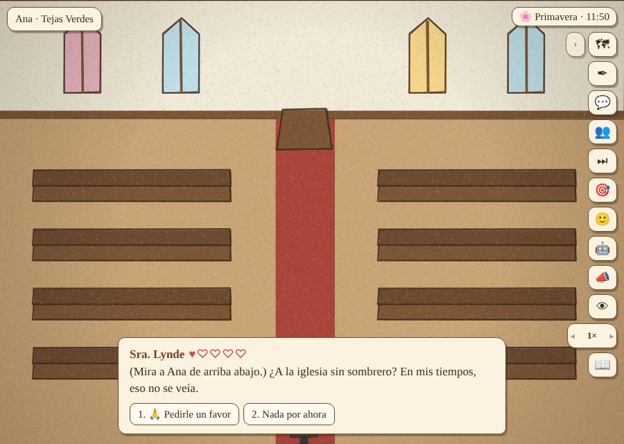

Prueba de usuaria: Ana en camisón por el pueblo, de noche y sin sombrero en la iglesia
Jugada con clics, por el mapa, después de agregar las reacciones de los grandes y los niños (frases de grupo, voz propia, testigos que lo cuentan). El método nuevo: cada error se escribe como una regla general (en src/datos/reglas.txt, en el modelo o en el motor) para que aparezcan todos los casos parecidos, no solo el que se vio. ← Partida 7
- Ana sale en camisón la primera mañana. Thomas Lynde la ve en el camino: solo se presentó («No te había visto nunca por aquí»), sin decir nada del camisón. Regla: lo que se ve de Ana manda: si alguien la ve en camisón, de noche o sin sombrero, eso es lo primero que dice (también al presentarse). Ahora: «(Se le queda mirando, con la boca abierta, sin saber qué decir.)»
- Al arreglarlo, Thomas decía «¡La niña de los Cuthbert, en camisón!» antes de que Ana le dijera de dónde era. Regla (reglas.txt): «la niña de los Cuthbert» o «la de Tejas Verdes» pide
sabe:{k}:nina_cuthbert. El modelo encontró 50 casos (todas las frases de grupo, y la Sra. Barry en su escena de presentación, que ahora se entera al empezar). - Ana siguió caminando y la presentación quedó en la primera línea, pero ya contaban como conocidos. Regla: una presentación cortada antes de que Ana diga quién es no deja a nadie conocido (en los dos caminos: la charla al pasar y el encuentro).
- En casa, Marilla repitió «Los platos no se lavan solos» cinco veces en dos horas, y «¿Dijiste tus oraciones?» cuatro. Regla: nadie le dice a Ana la misma frase dos veces el mismo día; cuando ya dijo todo lo que tenía, se calla (todo globo que aparece queda como «oído hoy», venga de donde venga).
- La Sra. Lynde fue de visita a la Sra. Barry y no le contó nada: el chisme fuera de la vista juntaba pares al azar. Regla: los que están juntos en una casa se cuentan lo que saben (Marilla se lo cuenta a Matthew; la Sra. Barry, a Diana).
- Las noticias que «le llegan a Marilla» (de noche, sin sombrero) no tenían ninguna reacción suya. Regla (grafo.js): toda noticia que le llega a alguien tiene una escena o frase suya que la pide. Escenas nuevas:
marilla_sabe_noche,marilla_sabe_sombrero. - De noche Ana se escapa a La Cuesta del Huerto: la Sra. Barry: «¡A esta hora, por el camino! ¿Saben los Cuthbert dónde andas?», y Marilla sale con el farol a buscarla. Al otro día, Marilla iba a decir «Me dijeron que anoche te vieron sola», cuando lo vio ella misma. Regla:
sabe:k:f:contada(alguien se lo contó); una escena que nombra quién se lo contó ({De:k:f}) tiene que pedirlo (lo revisa grafo.js). - El día 3, la escena de la Sra. Lynde «¡La huérfana de los Cuthbert, en camisón por el camino!» salió con Ana dentro de Tejas Verdes. Regla (reglas.txt): «en camisón por el camino / por Avonlea…» pide
!donde:ana:tejas. El modelo no lo había visto porque leíacanal:como el lugar de Ana, y en el motor es solo la cola de conversación: arreglado en el modelo, aparecieron las escenas de la Sra. Lynde y de la Sra. Barry. - Camino a la iglesia, Marilla le contaba al Sr. Phillips «¿Supo que anoche vieron a la niña de los Cuthbert sola por el camino?», y él le contestaba «Marilla tendría que tenerla más cortita», en su cara; y tres días después seguía siendo «anoche». Tres reglas: «la callan: marilla, matthew» (lo que avergüenza a la casa no se cuenta afuera); una frase que nombra a alguien no se le dice a esa persona ni la dice ella; una noticia que dice «anoche» u «hoy» no se cuenta por días (grafo.js).
- En el mapa, tocar el dibujo de la iglesia dejaba a Ana en un prado: la iglesia está dibujada grande, y su dibujo queda unos 400 pasos más arriba de la puerta. Regla: tocar el dibujo o el nombre de un lugar en el mapa es ir a ese lugar.
- En la iglesia, sin sombrero: Marilla: «(le susurra, sin mover los labios) ¿Y tu sombrero? ¡En la iglesia!». La Sra. Lynde, sentada al lado, no dijo nada hasta que Ana la tocó: las frases sueltas solo se dicen a menos de 90 pasos, quien «se queda» en un lugar (misa) contaba como ocupado, y a veces empezaba una conversación en vez de reaccionar. Regla: lo que alguien ve de Ana lo dice desde donde la ve, aunque esté en misa, y antes que una conversación. Ahora lo prueba
tools/reacciones.js. - Después, «Me vino a contar Thomas Lynde…»: Thomas es el callado del libro («ella habla por los dos»). Regla: «callados: thomas, matthew»: no andan contando noticias; solo a los de su casa. Ahora se lo cuenta la Sra. Lynde, más grande: «…en camisón por todo Avonlea, y descalza».
La prueba nueva: tools/reacciones.js
El modelo lógico prueba que hay una frase para cada situación; esta prueba mira que el juego la dice, sola, sin que Ana toque a nadie: pone a Ana en cada caso con alguien que la ve y deja correr el juego. Con el motor de antes falla (Barry en camisón; la Sra. Lynde en su banco de la iglesia); con el de ahora, todos reaccionan. Resultado: reacciones.json.






Lo que no se tocó
- Ana, jugada por la prueba, a veces se quedaba en camisón toda la mañana en su pieza: es la jugadora (no se viste sola), y Marilla la reta cada día a las 9.
- Algunas respuestas sueltas sin contexto («Marilla: Gracias.») son la otra mitad de una línea de Ana que en este resumen no se muestra.